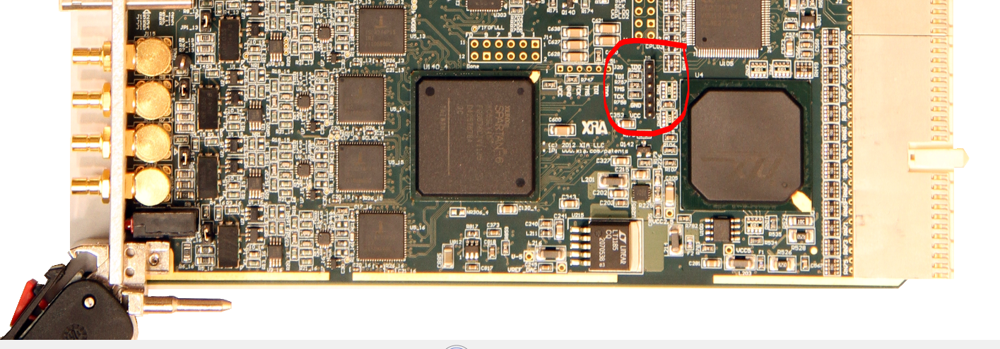

Update CPLD¶
If you encountered issues with booting the Pixie-16 modules when you were using a newer and more powerful computer.
The root cause is that XIA API software replies on delays in the software to ensure proper delays when downloading the firmware bitstream to the Pixie-16 modules.
However, as the computer gets faster and faster with multi-cores, such delays can no longer be guaranteed in the software. So you had to update XIA CPLD firmware to ensure such delay is met using hardware methods.
Please note this CPLD code should be used to update all of your Pixie-16 modules, 100 MHz, 250 MHz or 500 MHz.
6 pin JTAG connector¶
You should now try to locate the 6-pin vertical Pixie-16 CPLD JTAG header J8 (circled in red in the screenshot below).
The next step is to identify each of the 6 pins of the Pixie-16 CPLD JTAG header J8. When facing the top side of the Pixie-16 board, the 6 pins of the J8 connector can be identified as follows from top to bottom: TDO, TDI, TMS, TCK, GND, and VCC. It is very important to match these pins with the colored cables from the green PCB connector that is plugged into the Xilinx Platform USB programmer.
One issue here is that the Pixie-16 CPLD JTAG header J8 has 2 mm pin spacing, and the colored cables from the green PCB connector of the Xilinx programmer might have too large header to be plugged into the J8 pins directly. In that case, an adapter might be needed to convert those colored cable headers to 2 mm pin spacing first.
update the CPLD¶
Turn on your Pixie16 crate and the LED on the Xilinx Platform Cable USB should turn green. If the LED does not turn green check you cable connection. The grey INIT cable is purposely left unconnected. Your start menu should now include the folder Xilinx ISE Design Suite 14.7. Run the 32 bit or 64 bit version of “iMPACT”. Click on File->Initialize Chain and the program should find the xc2c256 CPLD. Click on “No” in the window “Auto Assign Configuration Files Query”, then click on “Cancel”. Left click on the Xilinx part in the window once, then right click and select “Assign New Configuration Files” and select the new “jed” file. Left click on the the Xilinx part, right click and then click on “Program”. A device programming properties window appears. Ensure that only “Verify” and “Erase before Programming” are checked, then click on “OK”. The program should now say “program succeeded” in blue at the bottom of the window. The CPLD is now reprogrammed and the Pixie16 is ready to be tested.
I would suggest testing out your first board before reprogramming the CPLDs on all of your boards. Once you are in the batch mode of reprogramming and you have the cable connected (the USB programmer LED is green), you only need to click on “Program” to reprogram CPLD on your next Pixie16.